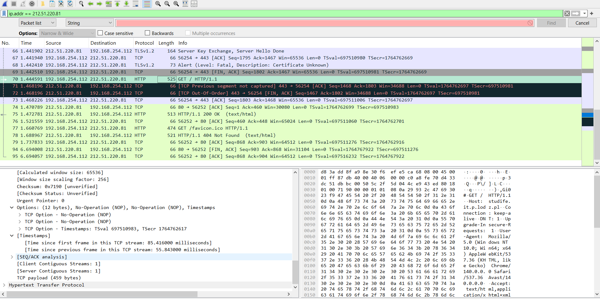

ISO/OSI Model and Practical Network Analysis Report
This report provides a theoretical description of the ISO/OSI model, its Protocol Data Units (PDUs), and the assignment of various network protocols to its corresponding layers, followed by practical analysis.
1. Theoretical Description
1.1. Description of ISO/OSI Model and Protocol Assignment
The Open Systems Interconnection (OSI) Model is a conceptual framework created by the International Organization for Standardization (ISO).
It describes seven layers that computer systems use to communicate over a network. It's the first standard model for network communications, adopted by all major computer and telecommunication companies.
The model is a conceptual tool for understanding and designing networking architectures,
defining how applications running on different systems can communicate with each other.
The seven layers of the OSI model, from top to bottom, are:
- Application Layer (Layer 7): The layer closest to the end user. It provides the interface between the applications and the network. It's responsible for interacting with software applications that implement a communicating component.
- Presentation Layer (Layer 6): Responsible for translating, encrypting, and compressing data. It ensures that the data is in a readable format for the Application Layer of the receiving system.
- Session Layer (Layer 5): Establishes, manages, and terminates the connections (sessions) between local and remote applications. It handles coordination and synchronization of the dialogue.
- Transport Layer (Layer 4): Responsible for end-to-end communication between the source and destination hosts. It ensures complete data transfer. It segments data and reassembles it into a data stream. It offers connection-oriented (TCP) or connectionless (UDP) services.
- Network Layer (Layer 3): Responsible for routing and logical addressing. It determines the best path for data to travel across interconnected networks. Protocols at this layer handle the logical addressing (e.g.,IP addresses).
- Data Link Layer (Layer 2): Provides node-to-node data transfer and detects/potentially corrects errors that may occur at the Physical Layer. It's divided into two sublayers: the Logical Link Control (LLC) and the Media Access Control (MAC). Protocols at this layer handle physical addressing (e.g., MAC addresses).
- Physical Layer (Layer 1): Responsible for the physical transmission medium (e.g., cables, radio waves) and the electrical/optical/radio signaling. It converts the data bits into a signal and transmits them over the network medium.
1.2. Protocol Data Units (PDUs) for Corresponding Layers
A Protocol Data Unit (PDU) is a single unit of information transmitted over a network. It represents the data payload at different stages of the communication process, often changing name as it moves through the layers.
| OSI Layer | PDU Name | Description |
|---|---|---|
| 7. Application | Data (or Message) | The actual application data. |
| 6. Presentation | Data (or Message) | Encoded/formatted application data. |
| 5. Session | Data (or Message) | Data with session control information. |
| 4. Transport | Segment (TCP) or Datagram (UDP) | Data broken into smaller, managed chunks for end-to-end transfer. |
| 3. Network | Packet | Data with network-layer headers (source and destination logical addresses). |
| 2. Data Link | Frame | Packet encapsulated with data link headers and trailers (physical addresses). |
| 1. Physical | Bit | A stream of raw binary data (0s and 1s) representing the signal on the medium. |
1.3. Protocol Assignment to Corresponding Layers
The following table assigns the specified protocols to the most commonly associated layer(s) of the OSI model. Note that some protocols span multiple layers (e.g., SSL/TLS) or are part of hybrid models.
| OSI Layer | Assigned Protocols |
|---|---|
| 7. Application | DNS, FTP, HTTP, MIME, NNTP, RTP, SIP, Telnet |
| 6. Presentation | SSL (Partially), TLS (Partially) |
| 5. Session | NetBIOS, SSL (Partially), TLS (Partially) |
| 4. Transport | TCP, UDP |
| 3. Network | ICMP, IGMP, IPv4, IPv6, L2TP (Tunneling component) |
| 2. Data Link | ARP, Bluetooth (MAC/LLC), IEEE 802.11 (MAC/LLC), L2TP (Data Link component), SLIP |
| 1. Physical | Bluetooth (PHY), IEEE 1394, IEEE 802.11 (PHY), RS-232, RS-449, USB |
| Multi-Layer | DHCP (Application/Transport/Network/Data Link), SSL/TLS (Presentation/Session) |
2. Practical Section: Wireshark Captures
2.1 Connectivity Test: ping google.com
The `ping` command successfully verified connectivity to `google.com` (IP: 216.58.208.206) with 0% loss. This process involves initial domain name resolution and subsequent ICMP echo requests.
Ping Result Screenshot:

Wireshark Protocol Analysis & OSI Layer Assignment:
| Protocol | Function | OSI Layer |
|---|---|---|
| DNS | Resolves the domain name to IP. | 7. Application |
| UDP | Transport for fast DNS queries. | 4. Transport |
| ICMP | Used by `ping` for echo requests/replies. | 3. Network |
| IPv4/IPv6 | Logical addressing and packet routing. | 3. Network |
| ARP / Ethernet | Local address resolution (MAC) and framing. | 2. Data Link |
2.2 Secure Copy (SCP): Upload to studife.it.p.lodz.pl
The Secure Copy Protocol (SCP) utilizes SSH to establish a secure channel. All data and authentication are encrypted during the file upload to the remote server (port 2222).
Ping Result Screenshot:

Wireshark Protocol Analysis & OSI Layer Assignment:
| Protocol | Function | OSI Layer |
|---|---|---|
| SCP | File transfer management. | 7. Application |
| SSH | Encrypted communication and authentication. | 6. Presentation / 5. Session |
| TCP | Reliable, connection-oriented data stream (port 2222). | 4. Transport |
| IPv4/IPv6 | Logical addressing and routing. | 3. Network |
| Ethernet | Physical addressing and framing. | 2. Data Link |
2.3 Webpage Access: it.p.lodz.pl
Accessing the institutional webpage resulted in secure HTTPS traffic. The analysis of the **Client Hello** packet (Frame 74) definitively identifies all seven layers of the OSI model, confirming the use of a modern, secure protocol stack.
Key Packet Screenshot (Client Hello):

Wireshark Protocol Analysis & Complete OSI Layer Assignment (Based on Client Hello):
| OSI Layer (L#) | Protocol Identified | Header/Field Evidence from Wireshark | Description of Role |
|---|---|---|---|
| 7. Application | HTTP/2 (or HTTP/1.1) | (Inferred via ALPN/Server Name Indication) | The high-level protocol used to request and deliver the actual web page content. |
| 6. Presentation | Transport Layer Security (TLS) | "Transport Layer Security" section | Responsible for **encryption** and decryption of data, ensuring the communication is private and secure (HTTPS). |
| 5. Session | TLS Handshake and TCP | TCP Flags: PSH, ACK | TLS initiates and manages the secure **session** key. TCP handles the ongoing flow control of the connection. |
| 4. Transport | Transmission Control Protocol (TCP) | Src Port: 54842, Dst Port: 443; Flags: 0x018 (PSH, ACK) | Provides reliable, ordered, and connection-oriented data transfer. Key flags used in this packet are:
|
| 3. Network | Internet Protocol Version 4 (IPv4) | Src: 192.168.254.112, Dst: 212.51.220.240 | Handles **logical addressing** (IP addresses) and routing the packet across different networks. |
| 2. Data Link | Ethernet II | Src: 30:f6:ef:e5:ca:68, Dst: d8:3a:dd:8f:a9:8e | Manages **physical addressing** (MAC addresses) and the framing of data on the local network segment. |
| 1. Physical | Frame (Physical Medium) | Frame Length: 1820 bytes | Defines the physical characteristics and signaling used to transmit the raw bits. |
Conclusion: The full protocol stack for `it.p.lodz.pl` utilizes **Ethernet** (L2) and **IPv4** (L3), relies on **TCP** (L4/L5) for reliable transport, and employs **TLS** (L6) for encryption before transmitting the application data (L7).
2.4 Webpage Access: studife.it.p.lodz.pl
Accessing the student portal results in secure HTTPS traffic. The initial **Client Hello** packet (Frame 58) and subsequent application data (including HTTP GETs) reveal the full protocol stack used to protect sensitive information.
Key Traffic Pattern Screenshot (Multiple Protocols):
Wireshark Protocol Analysis & Complete OSI Layer Assignment (Based on Client Hello and Application Data):
| OSI Layer (L#) | Protocol Identified | Header/Field Evidence from Wireshark | Description of Role |
|---|---|---|---|
| 7. Application | HTTP and **GET** method | Visible "HTTP GET /" and other HTTP requests (e.g., /favicon.ico) in subsequent packets. | The core protocol (HTTP) used to request the main page and resources. The **GET** method is the specific application command. |
| 6. Presentation | **Transport Layer Security (TLS)** | TLSv1.2 Record Layer (Client Hello: Version: TLS 1.2) | Provides **encryption** and decryption services to secure the HTTP data before it is transmitted. |
| 5. Session | **TLS Handshake** and **TCP** | TCP Flags: PSH, ACK; TLS Handshake setup | TLS establishes the secure **session** key. TCP maintains the logical connection and session synchronization. |
| 4. Transport | **Transmission Control Protocol (TCP)** | Src Port: 56254, Dst Port: 443; Flags: 0x018 (PSH, ACK) | Offers reliable, connection-oriented data transport between the specific ports (443 is HTTPS). |
| 3. Network | **Internet Protocol Version 4 (IPv4)** | Src: 192.168.254.112, Dst: 212.51.220.81 | Responsible for **logical addressing** (IP addresses) and routing the packet across interconnected networks. |
| 2. Data Link | **Ethernet II** | Src: 30:f6:ef:e5:ca:68, Dst: d8:3a:dd:8f:a9:8e | Manages **physical addressing** (MAC addresses) and frames the data for local network transmission. |
| 1. Physical | **Frame** (Physical Medium) | Frame Length: 1860 bytes | Defines the physical interface and signaling characteristics (e.g., radio frequency or electrical signal) for bit transmission. |
Conclusion: Communication with studife.it.p.lodz.pl relies on the standard secure HTTPS stack: **Ethernet** (L2) and **IPv4** (L3) for addressing, **TCP** (L4/L5) for reliable transport, and **TLS** (L6) to encrypt the **HTTP** (L7) requests. The use of **TLSv1.2** is specifically confirmed by the Client Hello version field.